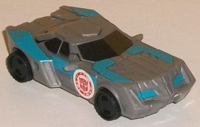
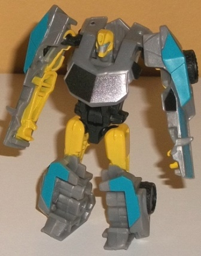
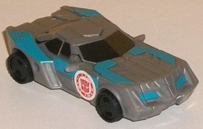
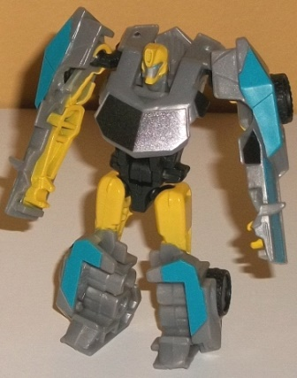
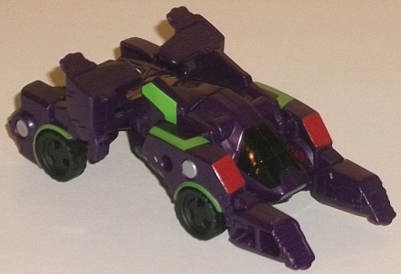
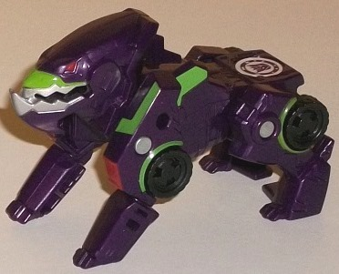

 
Allegiance : Autobot
Difficulty of Transformation : Easy
Color Scheme : Moderately light milky gray, yellow, moderately light electric blue, black, and some metallic charcoal black and silver
Individual Rating : 6.6
Size
: Legion 2-pack
Price
: $12 (U.S.)
Overall Rating
: 6.5
(NOTE: Because this set is composed of repaints,
this is not a full-blown review. This mainly covers any changes made to
the set and the color scheme, and merely compares it to the original versions
of these molds. For a review on the original version of RID2015 legion
Bumblebee-- go
here
. For a review on the
original version of RID2015 legion Underbite-- go
here
.)
 Bumblebee
(Clash; Legion)
Bumblebee
(Clash; Legion)


Allegiance
: Autobot
Difficulty of Transformation
: Easy
Color Scheme
: Moderately light milky
gray, yellow, moderately light electric blue, black, and some metallic
charcoal black and silver
Individual Rating
: 6.6
Unlike the other "Clash"
Bumblebee toys, this redeco actually has colors that are fairly accurate
to his Season 1 finale upgraded form/coloration. Of course it's not one-to-one
(especially at this small size), but there is a lot of gray and blue on
the toy, in addition to yellow. The gray is unfortunately that blah milky
shade of the color, so I'm not too fond of it, but it's not SUPER light,
so at least it's not super bland. In vehicle mode it's broken up quite
a bit by some electric blue on the headlights, front hood, and sides of
the car mode, which is sort of the whole "schtick" of the Season 1 finale
upgrades-- I guess it is meant to symbolize extra Energon power, or something
like that. Although the black plastic on the toy-- used for the wheels
and much of the "core" of the main body-- is a pure black, the paint used
on the front and side windows (but unfortunately not the rear window, which
is unpainted) is a nice metallic charcoal black, which looks pretty good
from most angles. It looks about as close as you can get to "tinted windows"
while not actually being transparent plastic. In robot mode, this being
Bumblebee, his yellow coloration comes out on the arm details on the inside
of his arms, as well as on his head and upper legs. (Additionally there's
some silver on his face with blue eyes.) The yellow really helps to put
more interest into this color scheme in this mode by giving another major
color beyond the gray and blue accents, and of course making it "Bumblebee-y".
The yellow really goes with the blue better than you'd think. That said,
there's just too much of that blah gray on this toy, especially in vehicle
mode, for it to look particularly good to me.
No mold changes have
been made to this version of Bumblebee.
 Underbite
(Clash)
Underbite
(Clash)


Allegiance
: Decepticon
Difficulty of Transformation
: Very
Easy
Color Scheme
: Dark milky purple
and some light lime green, black, silver, and moderately dark red
Individual Rating
: 6.4
"Clash" Underbite here
is more of a pack-filler, as there was no "upgraded" version of Underbite
used in the Season 1 finale, unlike the other toys in these special Legion
2-packs. Not much imagination was put into this upgraded version of Underbite,
anyways; it's basically Underbite with green lines on him. There's some
lime green angular lines on the shoulders and the main body, as well as
some green above his wheels and above his upper lip. (This last paint app
honestly looks a bit ugly, as it makes his snout look like it's lined with
mucus or something.) Other than that, though, the green contrasts excellently
with the dark milky purple plastic used for the rest of the toy, and they
look pretty good together. The rest of Underbite is VERY close to that
of the original release; the shade of purple plastic used for him is the
exact same as the mass retail release, and the shades of black, red, and
silver are the same as well. A few paint apps have been removed from the
original to make room in the budget for the extra green lines-- the black-and-red
lines around his "jaw gear" detail on the original are gone, as are the
silver on his paws and the red on the bottom of his paws, though new red
paint apps have been added to his lower shoulders instead. That's it; otherwise
he's the same.
No mold changes have
been made to Underbite.
The "Clash of the Transformers"
Bumblebee/Underbite legion 2-pack is a bit of a hard sell if you're already
gotten these molds, ESPECIALLY if you've gotten Underbite, as he's got
a few new green lines but is otherwise barely different from his original
release. Bumblebee's color scheme, on the other hand, is definitely different
from any of his other Legion class releases, and unlike his other "Clash"
releases actually has fairly show-accurate colors. However, being mostly
gray makes him mostly bland, in my opinion-- the blue highlights help a
bit, but in general I feel it's my least favorite release of his RID2015
legion mold. If you can't get enough Legion figures or can't find the originals,
this will do in a pinch, but otherwise I'd skip this release.
Reviews by Beastbot